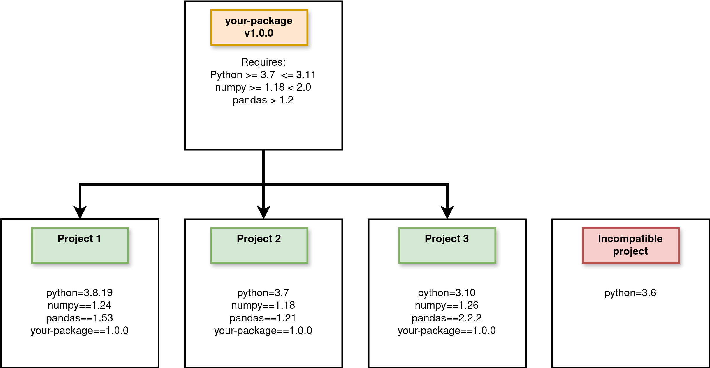

Installable Python packages#
If you want to deploy a python package professionally, sustainably, and easily to colleagues, clients or just everyone in general then a great way to do it is using a combination of GitHub, and/or the Python Package Index (PyPI) and pip. In the following sections we will learn how to setup a python package so that it is ready to be installed from GitHub or PyPI and also how to use hatch.
What is pip?#
A package management system for installing local packages, packages from GitHub and python packages from the Python package index. Example usage:
# install the latest compatible version of numpy from PyPI
pip install numpy`
or
# install the numpy version 1.18.0 from PyPI
pip install numpy==1.18.0`
or
# install a package from github
pip install git+https://github.com/health-data-science-OR/package-template@main
I recommend exploring what packages are available on PyPI. The chances are when you get stuck in data science project there will be a package on pypi to help you. For example, if you need to solve some really complex multi-objective optimisation problems you could pip install DEAP. Obviously you need to have an up-to-date version of pip before you can install anything. If you are using an Anaconda distribution or conda environment (for example, hds_code provided with this book) you should already have pip installed. If you are stuck there are some instructions here
Pronouncing PyPI
For a long time I prounounced PyPI as “Pie Pie”, but its correct prounciation is “Pie Pea Eye”. This makes more sense as “Pie Pie” should be reserved for the high performance implementation of Python in PyPy.
Why create and deploy an installable package for your own projects?#
In summary, it is useful if you want to use a package in multiple projects without asking the user to manage the source code or dependencies themselves. This can, of course, be managed in various ways, but I’ve found that people I work with have had an easier time when the software is managed by pip. For example, we haven’t manually managed the source for pandas, matplotlib or numpy in this book. That’s far too complicated. Package managers in general including pip make packages accessible to others. That’s a great thing for open science and health data science.
So the obvious use case for pip in health data science is if you want others to be able to easily install and use your software/project in their own work. I use it a lot for educational software for students. I like the idea that students can use course learning software after they leave a University and access updated versions of it if they want to refresh their skills. In recent years I’ve also been using the package structure to make computer simulation models from my research open and reusable by others.
At a minimum I recommend making your package open via a cloud based version control system such as GitHub. If it is structured correctly it can be installed by
pip.
The difference between packages and projects#
Let’s assume you are working on a data science project that aims to predict a patient’s risk of a certain type of cancer given data collected in a series of GP consultations. You have the data and now need to set up Python software environment on your computer to do the analysis and modelling. This is relatively simple - you already have Python version 3.10 installed and you decide you also need numpy, pandas and keras. You pip install these packages and end up with versions 1.26, 2.2.2 and 2.15 respectively. You can think of this software environment as a reproducible software environment for your project. This is the general process you follow for every data science project you will conduct. You’ll choose a Python version (maybe the latest, maybe just the version you normally use) and install compatible packages. Its important because it means that if you wanted to repeat the analysis you could do so using the same version of Python and packages.
When you are developing a package you need to think differently. Put yourself in the position of someone trying to support others conduct data science projects in Python. Firstly, you will need to be clear about what versions of Python your package will support. For example, you might want users of Python 3.8, 3.9, 3.10 and 3.11 to all be able to install and use the package. Note that the more versions of python you want to support the less likely it is you can make use of new features introduced in the updates so think carefully before you try to support all of version Python 3 as prior to version 3.6 they were very different. Secondly, you will need to declare what software dependencies your package requires (e.g. numpy, pandas, keras). For dependencies you need to select the minimum version that will run your code. Over time these dependencies will release their own new versions and, for example, numpy may deprecate old functions/constants that you rely on (especially on a major release e.g. numpy>=2.0). In these instances you could either modify your package and release your own new version or specify a maximum version of the numpy that is compatible (e.g. numpy<2.0)
What versions of Python should I support!?
For my own packages (as of 2024) I no longer plan to support Python prior to version 3.9. And I plan to drop support for 3.9 in the next few years. This is in line with the latest versions of popular packages like numpy (>=3.10) and matplotlib(>=3/9). But before you use this as a hard and fast rule please make sure you talk to your potential users. For example, if you are working with the NHS and they have a Python 3.7 environment and that’s unlikely to change you will want to support it.
The difference is illustrated in the Figure below. Here your-package v1.0.0 is your analysis package. There are three projects using your package with different (supported) version of Python and dependencies. There is also a project that is currently using Python 3.6 that is not compatible with your package.
{kind=link}
Setting up a git repo#
I don’t want to be too prescriptive here. It really is up to you and your collaborators how you organise your own code. There are many suggestions online as well. The structure I am going to introduce here is a simple one I use in my own projects. You will see variations of it online. Here’s the template repo. We will then take a look at the elements individually. You can view the template repository and the code it contains on GitHub
analysis-package
├── analysis_package
│ ├── __init__.py
│ ├── model.py
│ ├── data
│ | ├── model_data.csv
├── tests
│ ├── test_model.py
├── LICENSE
├── environment.yml
├── README.md
└── pyproject.toml
environment.yml#
One thing I have learnt from the Open Source community is it is useful to include a virtual conda environment for yourself and developers who contribute to the library. That is what is in environment.yml. For example the package-template repo includes the following:
name: pypi_package_dev
channels:
- conda-forge
dependencies:
- black
- flake8
- hatch
- jupyterlab=4.2.4
- jupyterlab-spellchecker=0.8.4
- matplotlib=3.9.1
- nbqa
- numpy=2.0.1
- pandas=2.2.2
- pip=24.0
- python=3.11
- pytest=8.3.2
It is entirely up to you what you include in the development environment, but I find it useful to include
An notebook type IDE like
jupyterlabfor creating notebooks that contain examples of the package in use.The latest update of linting tools such as
black,flake8andnbqaA build tool such as
hatch(we will see how this works shortly)Testing tools such as
pytest.
pyproject.toml#
Where has setup.py gone?
In prior versions of this book I included material that built an installable python package using setuptools + build and the script setup.py (plus several other files!). That approach still works and is employed by many major data science packages. However, I have found that a hatch + pyproject.toml is a cleaner and simpler solution overall. You can still access my setuptools materials in the archived version 2.0.2 of the book.
This is the important file for pip and controls the installation of your package. TOML standards for Tom’s Obvious Minimal Language. In simple terms pyproject.toml is readable way to write down the configuration of of your package. It includes information about what software is used to build the package and all the package “meta-data” e.g. name, version, description. I’ve included a reusable template in the repo that can be used to edit. Let’s take a look at the full file and break it down.
[build-system]
requires = ["hatchling"]
build-backend = "hatchling.build"
[project]
name = "analysis_package"
dynamic = ["version"]
description = "A short, but useful description of your package"
readme = "README.md"
license = "MIT"
requires-python = ">=3.9"
authors = [
{ name = "Thomas Monks", email = "generic@genericemail.com" },
]
classifiers = [
"License :: OSI Approved :: MIT License",
"Operating System :: OS Independent",
"Programming Language :: Python :: 3.9",
"Programming Language :: Python :: 3.10",
"Programming Language :: Python :: 3.11",
"Programming Language :: Python :: 3.12",
]
dependencies = [
"matplotlib>=3.1.3",
"numpy>=1.26.1",
"pandas>=2.0.1",
]
[project.urls]
Homepage = "https://github.com/health-data-science-OR/pypi-template"
"Bug Tracker" = "https://github.com/health-data-science-OR/pypi-template/issues"
[tool.hatch.version]
path = "analysis_package/__init__.py"
[tool.hatch.build.targets.sdist]
include = [
"/analysis_package",
]
The build system#
The package management system we are going to use to for our installable python package is hatch. I have found hatch to be intuitive (with easy to remember commands!), fast and useful for building a package and testing the code in multiple Python versions. It can also optionally be used to upload your package to PyPI. I’ll cover the essentials here, but there hatch documentation can also be consulted for more advanced use.
To specify the build system in pyproject.toml we use the build-backend. Notice that we specify hatchling here and not hatch. The back-end is is the tool hatch will call when you ask it to perform the build - hatchling is the work horse so to speak.
The package hatch is a front-end build tool. Its purpose is to provide a simple to use command line interface for common package management actions (that may use different back ends). This includes running the back-end to build the Python package (more on what the build process outputs shortly).
If this the first time building an installable python package the difference between build front and back ends may be confusing. The good news is that while you are learning you can just use include the TOML below in your pyproject.toml and hatch will work as expected.
[build-system]
requires = ["hatchling"]
build-backend = "hatchling.build"
Are there alternative tools available?
An alternative and popular tool for Python package management (that has been recommended to me, but I do not have experience of using) is Poetry. Poetry does a bit more than hatch for example, it also manages and resolves dependencies for a project. But that is the tip of the iceburg. For a very clear overview of the options avilable to you you can read this excellent blog post by Anna-Lena Popkes.
Project meta data#
Project meta-data stored in the [project] table are data that describe the Python package. This includes the package name, version number, a brief description, authors(s), the minimum supported version of Python and dependencies.
You can also include a classifier for each individual version of Python supported (note: you should have tested your package in each version included). If you publish your package via PyPI this meta-data is displayed alongside your package.
A simple way to setup the meta-data is to use the template provided and edit the strings for each variable to match your needs. However, there are two caveats to cover in more details. The first is dependencies and the second is the package version.
Specifying package dependencies#
For dependencies, you need to include the Python packages (that available to be installed from PyPI) that your analysis package uses in its code. For example, a module in your code might make use of numpy arrays. To run that code your package needs numpy installed. If numpy is not installed a runtime error will occur when you try to import the package.
Package dependencies are added to a list called dependencies as follows:
dependencies = [
"matplotlib>=3.1.3",
"numpy>=1.26.1",
"pandas>=2.0.1",
]
For our example installable package, we are using matplotlib, numpy and pandas. Note that we have specified the minimum version of the software that our package supports. This means, for example, that we the package is only supported (and will only work) if a user attempts to install this into an environment with at least numpy=1.26.1.
Managing the versioning your package#
All python packages should behave in this way:
>>> import analysis_package
>>> print(analysis_package.__version__)
'0.1'
We need an __init__.py file for our package to reference a version number AND we need to include a version number in the TOML file.
Rather than hard coding the version in two places, we can set the package version attribute to dynamic and use hatch to read it from the __init__.py file.
[project]
dynamic = ["version"]
[tool.hatch.version]
path = "analysis_package/__init__.py"
How do I hard code the version in TOML?
If you did want to hard code the version of your package you just need to replace the dynamic=['version'] line with version="0.1.0" as shown in the snippet below. Note that this should match the version in __init__.py. Personally I have found that the dynamic method is preferable - it avoids me forgetting to update it in two places.
[project]
version = "0.1.0"
Licence#
Published packages should also be accompanied by an open licence. A licence details how others may use or adapt the package as well as re-share any adaptations and credit authors. At a minimum a licence specifies the terms of use for a package, and waives the authors of any liability if the package is reused. There are many types of standard licence relevenat for health data science. For example, you might choose between a permissive-type licence (e.g., the MIT; or BSD 2-Clause) or a copyleft type licence (e.g., GNU General Public Licence v3).
You should consider the package you publish as Free and Open Source Software (FOSS). Note that FOSS here is more than open source code. It grants the freedom for users to reuse, adapt, and distribute copies however they choose. Examples include numpy and pandas (BSD License), Tensorflow (Apache), and matplotlib (Python software foundation license). For a more detailed overview of licensing and license compatibility see the Turing Way.
The good news is that hatch will include your License file in your package by default. There are no settings that need to be modified.
Package data#
For a data science project you may want to ship example data that can be used to demonstrate or learn of how to use your package. As an example, the package in the template repo includes a subdirectory analysis_package/data containing a single (dummy) CSV called model_data.csv.
As with licenses hatch will automatically include your data in the package. See my own package sim-tools for an extra example.
Local installation and uninstallation of your package#
Now that we have a pyproject.toml we can install our package locally! First navigate to the repo on your local machine and open a terminal or command prompt. Activate the environment where you would like to install the package e.g. conda activate hds_code
For now, I recommend installing your package in editable mode. This is the best thing to do while building (or extending/patching) your package. Any changes to the package code in analysis_package are automatically reflected in the environment (in Jupyter notebooks, you will need reset the kernel). This means you do not have to reinstall the package multiple times. To install in editable mode issue the following command:
pip install -e .`
If you wish to install the local package without anyway to dynamically edit and update the code use:
pip install .
Exercise: Test out your install by launching the python interpreter.
# this should work!
import analysis_package
print(analysis_package.__version__)
If you have used the default package settings then you will have installed a package called pypi-template (version = 0.1). To uninstall use the package name:
pip uninstall analysis_package
Building source and wheel distributions#
If you head over to the download section for my package treat-sim on PyPI you can see that two files are available to download. The first is a tarball (a compressed file .tar/gz) and the second has a unusual extension .whl. These are package source and wheel distributions that are used by pip during the installation. Wheels are an advanced topic and it took me a while to get my head around what a wheel distribution actually is and why it is useful! A nice phrase I came across is that ‘wheels make things go faster’
A source is just what you think it is. It is your source code!
A wheel (.whl) is a ready-to-install python package i.e. no build stage is required. This is very useful for example if you have written custom C or Rust extensions for python. The wheel contains your extensions compiled and hence skips the build step. Wheel’s therefore make installation more efficient. They are important for complex data science packages such as
numpythat would be complex and time consuming to build from source.
You can create universal wheel’s i.e. applicable to both python 2 and 3 or pure python wheels i.e. applicable to only python 3 or python 2, but not both.
You might have noticed that when we installed analysis_package via pip install -e . we didn’t need to build these files. However, if you look carefully at this exert from the output of that pip command you might notice that that was some hidden work building that wheel.
Building wheels for collected packages: analysis_package
Building editable for analysis_package (pyproject.toml) ... done
Created wheel for analysis_package: filename=analysis_package-0.1.0-py3-none-any.whl
In our case the build wasn’t time consuming as the package is simple, but if we had to do this fall all packages and their dependencies the process would become painfully slow. Hence we use tools like hatch to build the source and wheel files for us in advance of uploading to a platform like PyPI.
hatch build
This will create a new directory dist/ containing the source and wheel files.
├── dist
│ ├── analysis_package-0.1.0-py3-none-any.whl
│ └── analysis_package-0.1.0.tar.gz
Wheel file naming
A .whl file is named as follows: {dist}-{version}-{build}-{python}-{abi}-{platform}.whl
For additional information on wheels I recommend checking out https://realpython.com/python-wheels/
When we know run a pip install locally we don’t need to build the wheel. There’s little advantage in our case, but we’ll need these files when we look at uploading to PyPI shortly.